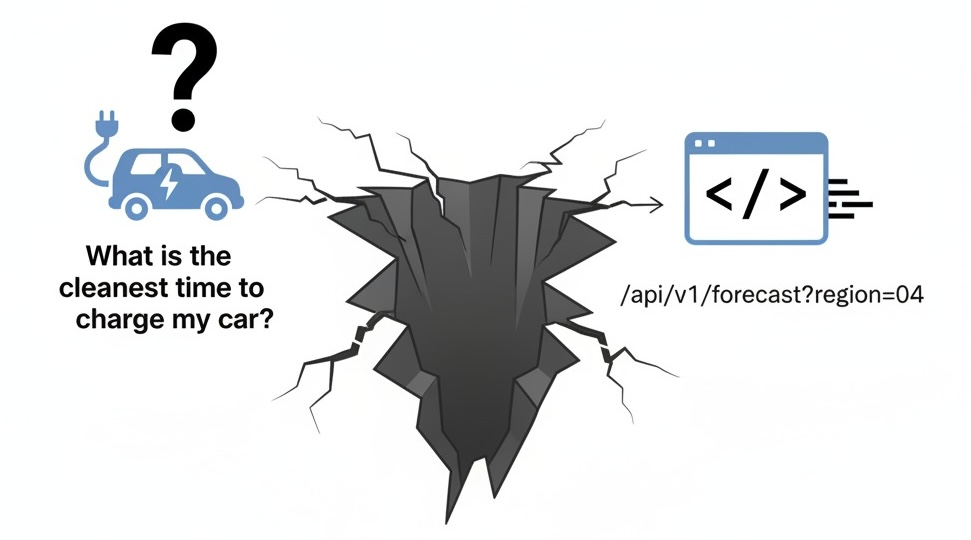
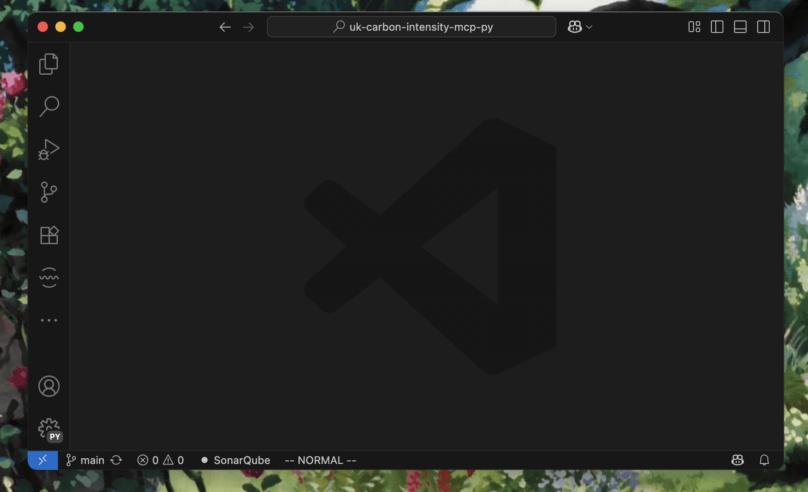
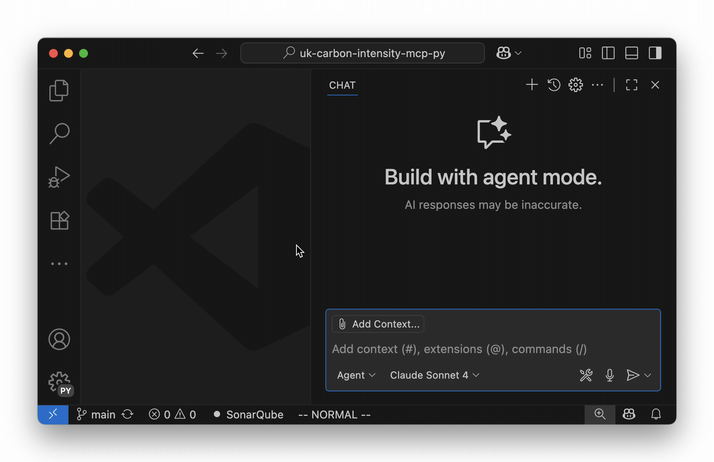
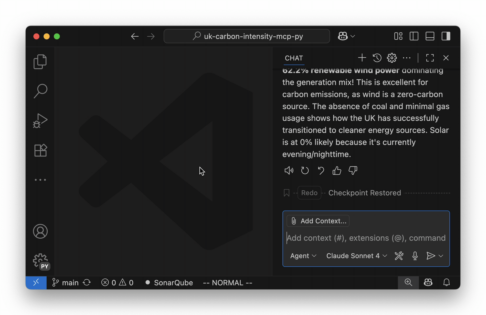

The End of Front-End
Delivering Software via LLMs and the Model Context Protocol
pip install rse-vibe-coding
👋 Cristian Dinu, UCL
The RSE Friction
RSE as Tool Builders…
- Endless UIs
- Endless docs
- Endless support
RSE as Tool Users…
- Endless wrappers
- Endless glue code
- Endless boilerplate
What if your software just… understood you?
The Chasm
There is something that can:
- understand natural language
- understand intent
- could generate a list of commands… if it only had the tools
MCP is a Contract
A simple schema defines your tool’s capabilities.
Live Demo: The Setup
- Client: Any LLM chat interface (VSCode, Claude, Cursor, etc.)
- Server: A Python app exposing our tools via MCP.
Creating our own MCP Server
- Carbon Intensity API – api.carbonintensity.org.uk
- Prerequisites:
uv- python project managernodejs- JavaScript interpreter (optional, forinspectortool)
- We need to think about semantic intent
Initialize the project
(code available at: github.com/cdinu/uk-carbon-intensity-mcp-py)
Write the code – main.py
import requests
from fastmcp import FastMCP
mcp = FastMCP("CarbonIntensityMCP")
@mcp.tool(name="Get Current Intensity")
def intensity_current():
"""Fetches the current carbon intensity of the UK electricity grid.
Returns a JSON with the current carbon intensity in gCO2eq/kWh."""
url = "https://api.carbonintensity.org.uk/intensity"
try:
response = requests.get(url)
response.raise_for_status()
data = response.json()
return data["data"]
except Exception as e:
return f"Failed to retrieve current carbon intensity: {str(e)}"
if __name__ == "__main__":
mcp.run()Add parameters, too:
@mcp.tool(name="Read Carbon Intensity for Dates and Postcode")
def intensity_for_dates_and_postcode(from_datetime: str, to_datetime: str,
postcode: str,
):
"""Fetches electricity grid carbon intensity data for a specific UK postcode and time range.
The `from_datetime` and `to_datetime` should be in ISO 8601 format (e.g. 2018-05-15T12:00Z).
The `postcode` needs only the first part e.g. RG10 (without the last three characters or space)
Returns a summary including average forecast and generation mix. Dates returned are UTC. Units are gCO2eq/kWh.
"""
url = f"https://api.carbonintensity.org.uk/regional/intensity/{from_datetime}/{to_datetime}/postcode/{postcode}"
try:
response = requests.get(url)
response.raise_for_status()
return response.json()["data"]
except Exception as e:
return f"Failed to retrieve carbon intensity data: {str(e)}"Configure your MCP client
View available tools

Call a tool
Call another tool
The Real Magic: Orchestration

What Just Happened?
- We provided capabilities
- User stated intent
- The LLM built the workflow on the fly
RSE Superpowers Unlocked 🚀
| For Tool Builders… | For Tool Users… |
|---|---|
| ✅ Escape the UI Treadmill | ✅ Query by Intent |
| ✅ Slash Support Load | ✅ Zero Boilerplate |
| ✅ Instant “Feature” Rollout | ✅ Your Personal Orchestrator |
The Future is a Conversation
- Natural Language is the universal flexible front-end “programming language”.
- APIs are the stable, reliable backend.
- MCP is the contract that connects them.
What will you build?
- The front-end isn’t disappearing.
- It’s becoming invisible, adaptive, and conversational.
Thank You!
Cristian Dinu
Thank you!
https://cdi.nu/talks/2025-09-RSECon
The End of Front-End | Cristian Dinu, UCL | Linkedin: /in/cdinu